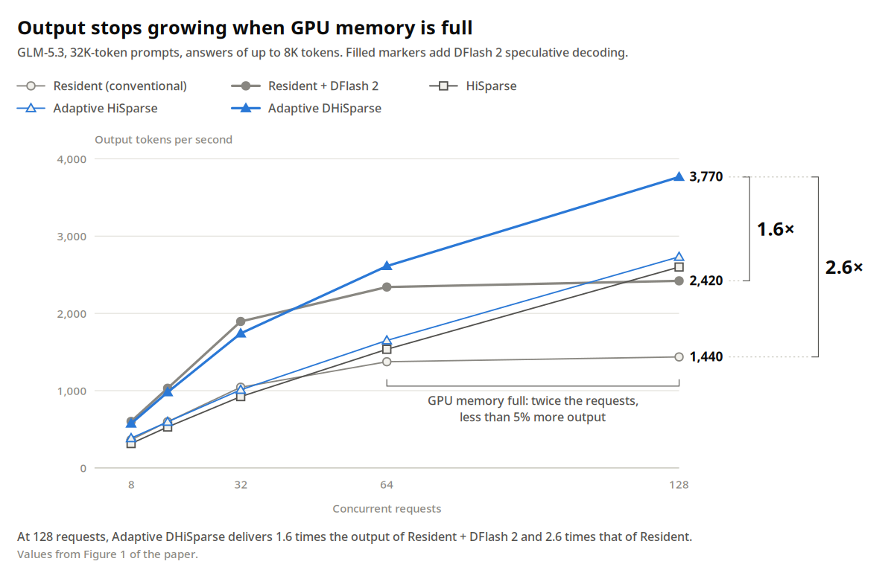
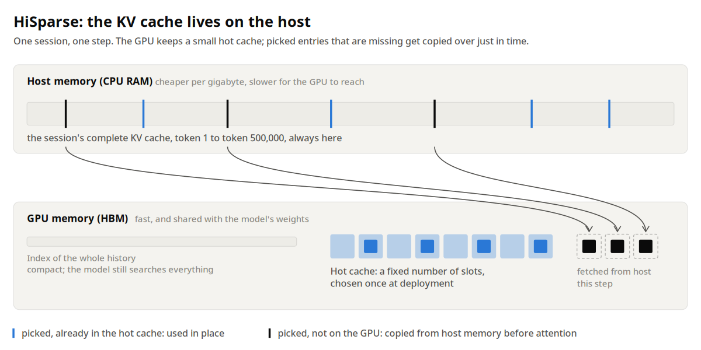
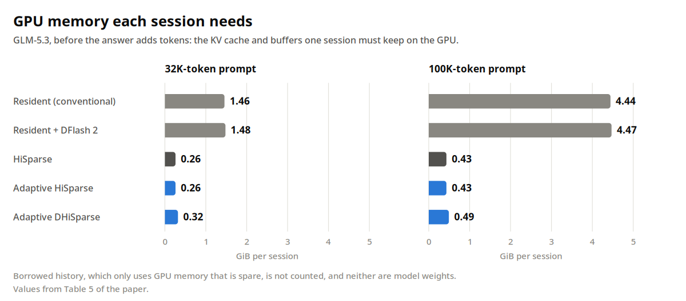
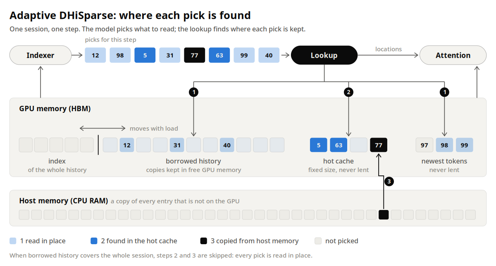
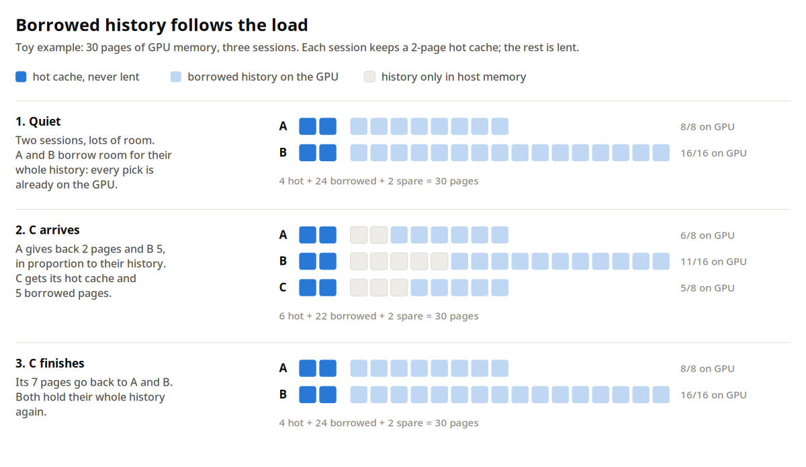
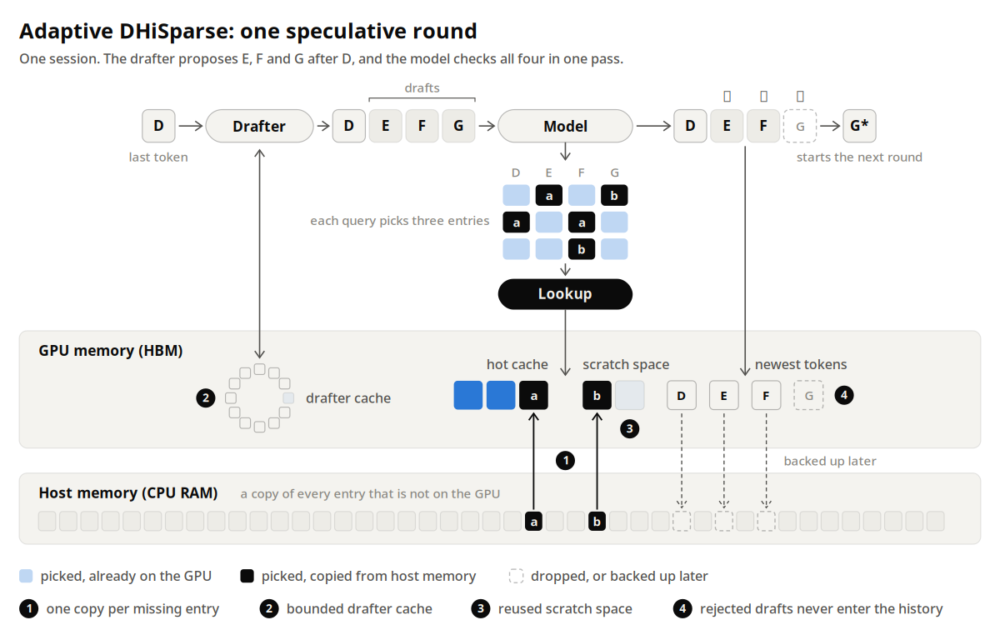
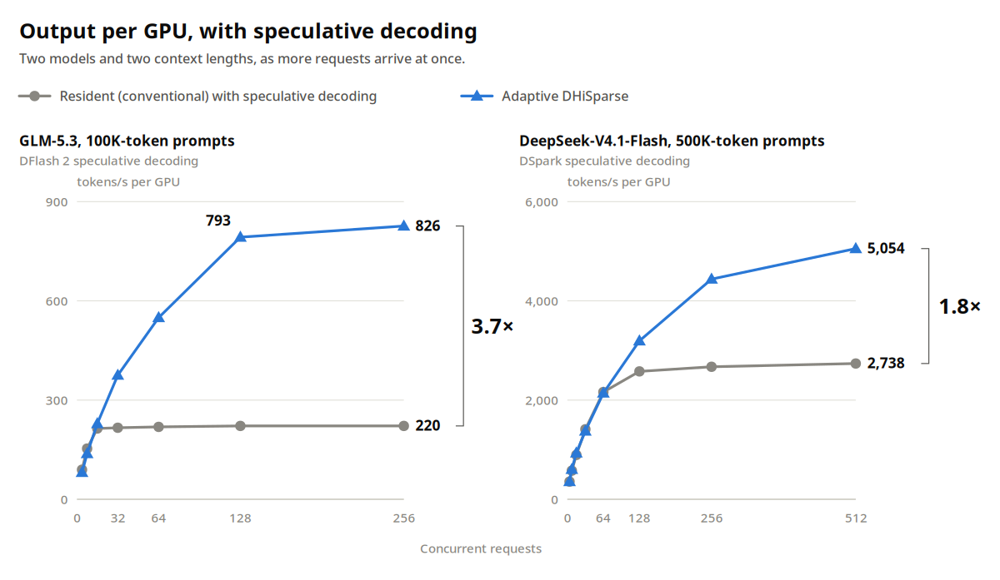
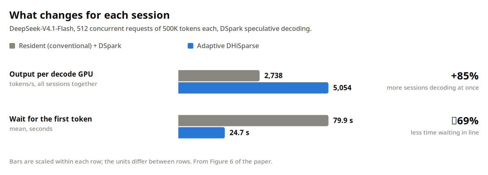

紧贴每块GPU的高速显存HBM一直不够用,下一代硬件也改不了这个现实:传闻中Rubin Ultra每GPU只有192GB HBM,比现在B300的288GB还少。与此同时,新模型架构已经在为缺显存做准备:DeepSeek-V4.1-Flash约四分之一权重可以住在CPU内存甚至SSD里。而HBM的另一个大头：KV cache,随每个token增长,Agent一跑就是长会话。Adaptive DHiSparse就是一套为长会话Agent做的KV显存系统:KV全放内存,闲时借显存,忙时还回去,还原生支持推测解码。
语言模型一次写一个token,每个新token都依赖之前全部内容,KV cache随会话增长,住在HBM里：GPU自己的内存,快、贵、少,模型权重还要先分走一份。Agent把会话拉长:写代码的Agent每步都要重读整个工作区：打开过的文件、工具输出、此前的推理,再写几百个token。典型Agent负载里,一个请求携带10万token以上的上下文;在GLM-5.3上,单个10万token会话的KV cache约4.4GiB。
一块GPU同时服务很多会话。每步读一遍模型权重、作用到batch里每个会话,会话越多,同样功耗产出越多：前提是每个会话的KV cache都装得进显存。显存一满,新请求排队,GPU输出不再增长,算力却还空着。长会话下,GPU远在算力耗尽之前就先耗尽了显存。

论文图1在GLM-5.3、3.2万token prompt上展示了这一点。常驻服务(全部KV放GPU)随负载涨到约64并发就见顶:128并发只比64并发多不到5% 输出,首token平均等待从1秒内变成1分钟以上,加上DFlash 2推测解码也搬不动这条线。同一批GPU换上这套内存系统继续涨:128并发下Adaptive HiSparse(单用内存系统)达到常驻服务的1.9倍输出,Adaptive DHiSparse(再加推测解码)达到常驻服务加DFlash 2的1.6倍。
能这么做的前提,是新模型读KV的方式变了:稀疏注意力。每步attention只读KV cache的一小部分：与下一个token最相关的那些位置。一个叫indexer的小部件给每个历史位置打分,留分最高的。GLM-5.3每步取2048个位置,DeepSeek-V4.1-Flash取512个,约占50万token会话的0.1%。
剩下的历史还得够得着：indexer下一步可能pick任何位置,而且每次都变。但它不必住在HBM里。Host内存(服务器CPU内存)是旁边的第二个池子:每GB更便宜,GPU够起来更慢,正好放模型当下不读的那部分历史。HiSparse(Xie等,2026)把每个会话的完整KV cache都放这里;GPU上每个会话只留indexer搜索用的紧凑索引(模型照样考虑全部历史),外加一个小hot cache存最近用过的entry。每步命中hot cache的直接用,缺的在attention需要前从host拷过来。模型算出的结果与全放GPU分毫不差,变的只是字节住哪。

把历史卸到host,单个会话的GPU显存占用直接下来:GLM-5.3、10万token下,常驻4.44GiB,HiSparse 0.43GiB,约十分之一。

HiSparse留了两个部署时悬而未决的事项。第一,hot cache大小对所有会话、所有负载一刀切:小了装更多会话,但闲时也频繁读host;大了省host读取,忙时装不下。第二,HiSparse不支持DSpark、DFlash 2这类draft模型,而生产级推理栈的推测解码正依赖它们。Adaptive DHiSparse同时解除了这两个限制。
分工只有一条:模型决定读哪些entry,服务系统决定这些entry住哪。前者不动,后者随负载连续调整。
每个会话有一块永不外借的working set:hot cache与正在写的最新token。GPU剩下的空闲内存,用来存各会话历史的额外副本,叫borrowed history。服务器闲时,会话能借到接近全部历史的空间,indexer命中的entry大多已在GPU:GLM-5.3的负载测试里,出借把低负载下从host取数的占比从14.2% 打到1.4%。
历史只装下部分时,GPU上一遍排序定查找顺序:最新token与借来的历史先查,再查hot cache,还缺的才走host。查找范围恒等于hot cache大小,借了多少历史都不膨胀。

借出去的要还。新会话要空间时,运行中的会话按历史比例归还页;页在归还前先备份到host,丢了不心疼,之后被pick到就当一次普通缺失拷回来。会话结束,它的空间分给别人。

同一份负载测试展示了"收回":请求从16跳到256,GPU上历史占比从75%~100% 掉到1% 以下,只用了16秒;负载回落后两分多钟,又爬回50% 以上。
于是HiSparse留给部署的二选一消失了:hot cache保持适合忙服务器的小尺寸,闲时借来的历史填满"大cache本会占掉"的内存。闲时会话跑得接近KV全在GPU;忙时收缩回HiSparse working set,服务器装更多会话。目标就是:一个不用关的内存系统,随负载自己调。
很多推理栈还用推测解码:小drafter一次提议几个token,模型一遍全验,猜对就多产token。测试里DeepSeek-V4.1-Flash配DSpark,GLM-5.3配DFlash 2。HiSparse天生跑不了drafter:它不给drafter留KV cache,一次也只查一个query。Adaptive DHiSparse把draft模型的推测解码带进了这类服务。
推测让内存更难两处:每个draft token各pick一份KV,一次check读更多历史;drafter自己的KV cache加check的暂存空间,挤占本可装会话的内存。常开的内存系统两处都得接住,做法有三:
一次拷贝。多个draft命中同一个不在GPU的entry,只从host拷一次,每个draft依然只attend自己的pick。计数显示,check期间这省掉了29% 的host拷贝。
有界的drafter cache。drafter的KV cache住在一个ring里,大小按drafter能看多远定:GLM-5.3的drafter回看2048个token,ring每会话2176行,会话再长也不涨。
暂存复用。check时装pick的暂存区,一组layer用完交下一组。GLM-5.3上4个区代替78个,这部分内存省95%。

被拒的draft永不进历史;DSpark与DFlash 2的提议与接受逻辑原样不动。
测试覆盖两个模型,长prompt且前缀已缓存,并发从几个到几百;对比常驻服务与HiSparse,Adaptive HiSparse/Adaptive DHiSparse分别是不带/带推测解码的版本。GLM-5.3的runs用解耦服务,prompt与answer跑不同GPU。

GLM-5.3、10万token prompt、DFlash 2:常驻服务在约16并发后停涨,卡在220 tokens/s/GPU附近,128并发时首token平均等约4分钟;Adaptive DHiSparse在128并发跑出793 tokens/s/GPU、首token平均5.1秒,256并发826：3.7倍。
DeepSeek-V4.1-Flash、50万token prompt、512并发、DSpark:Adaptive DHiSparse每decode GPU 5054 tokens/s,对常驻服务同推测解码的2738,约1.8倍。不开推测解码,Adaptive HiSparse 4217对1853。
增益随上下文变大。DeepSeek、512并发、无推测:3.2万token prompt时显存还不是瓶颈,两者相当(6320对6489);20万token时Adaptive HiSparse多57%。
对HiSparse(不支持推测解码)优势更大。GLM-5.3、128并发:Adaptive DHiSparse多45%(793对548)。在统一延迟约束下(初始burst过后99% 首token在10秒内、平均每token 40ms),它扛住的并发数是HiSparse的4倍,输出3.7倍。
无推测解码时,Adaptive HiSparse相对HiSparse:GLM-5.3轻载多19%~23%,128/256并发多13%~14%;DeepSeek 512并发多9%,首token 20秒vs 28秒。
轻载有小代价。KV还装得下时,自适应服务比常驻慢3%~7%:DeepSeek 16并发慢3.6%,GLM-5.3慢约5%~7%。加DFlash 2后GLM-5.3在4/8并发差9%~10%;加DSpark的DeepSeek在16并发反而更快。
推测自带trade-off:额外内存让GLM-5.3会话槽位从208降到140。256并发时Adaptive DHiSparse与Adaptive HiSparse输出相当(826对823,在runs方差内),但首token等65秒vs 34秒,几乎全花在排140个槽位上。DFlash 2的block size还是按负载手工调的(32并发以下用8,64用6,128/256用4)。

不变的是计算:每步attend的entry与字节,与全放GPU时完全一致,论文给出了精确条件。测试只覆盖每模型一种部署,prompt前缀已缓存。
稀缺显存下干活已是日常,作者说甚至有点享受：当下AI最有想象力的工作不少来自这个约束:稀疏注意力让模型只读下一个token需要的那部分历史;DeepSeek-V4.1-Flash跨层共享KV;Engram把部分权重搬出HBM;DSpark、DFlash 2让每步多产几个token。它们都在让同样GPU产更多token,模型与服务系统为彼此设计时,走得更远。
同样的思路也许能帮到本地机器:那里的GPU内存更紧,系统内存往往更大。
参考：https://blog.umans.ai/blog/adaptive-dhisparse/